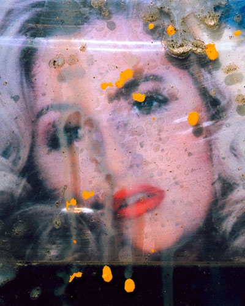

exhibition archive | ||
After the Women of Paradise RoadPhotographs and Installation by Nathaniel Ward Curated by mr. and mrs. amani olu On View: Opening Reception for the Artist: Gallery Hours: |
 The Wild Project and mr. and mrs. amani olu are pleased to present After the Women of Paradise Road, an exhibition of photographs and installation by Nathaniel Ward. This is the artist’s first solo exhibition in New York. In After the Women of Paradise Road, Ward investigates how hetero-normative sexuality functions in society by appropriating the covers of adult periodicals distributed in magazine vending boxes that line Paradise Road in Las Vegas. The exhibition includes four large-scale color photographs that reflect the spectrum of idealized eroticism from suggestive to hardcore. Through a set of hackneyed sexual poses, expressions and gestures, and the sectioning of the human body, the women who pose for these photographs are elevated to anonymous, marketable objects of desire. However, like any commodity, the introduction of new and improved “products” to the “marketplace” thwarts their short-lived tenure as covetous. Thus, the system that once celebrated their conventional beauty, eventually abandons it, leaving these women to rot on places like Paradise Road. Ward photographs these women in this depressed state, complete with weathering, sun bleaching, and surface detritus. These magnified obstructions (bird feces, half torn stickers, etc.) further separate the model that originally posed for the photograph from the viewer, leaving him or her with an abstracted image. These abstractions become objects or inconsequential material that abets the desensitization of emotional intimacy. In an effort to materialize these notions, Ward flew to Las Vegas to purchase a magazine vending box, which he installed in the gallery along with adult sex cards littered about the gallery’s floor as refuse. This site-responsive installation confronts the viewer, encouraging a meaningful interaction with the exhibition. By covering the floor with sex cards, the viewer must step on a very particular representation of women, thereby making him or her complicit in the discarding process, just as they would be on the streets of Las Vegas. This aspect of the installation suggests that complicity is a default position. In other words, to approve or disapprove of gendered socialization and aesthetics is to fuel the engine that keeps it running. This appropriation of space and material activates the gallery and provides a tactile element necessary to bring the viewer one step closer to the spectacle of mass-marketed female sexuality. Nathaniel Ward (b. 1983) lives and works in Brooklyn, NY. In 2006, Ward received his BFA from NYU’s Tisch School of the Arts in the Department of Photography & Imaging after briefly studying painting and drawing at the Rhode Island School of Design. Ward has exhibited internationally since 2005, including exhibitions at the Center for Architecture, Gulf + Western Gallery, Broadway Gallery in New York, and as a part of independently curated group exhibitions at LOOKBetween 2010, SCOPE Art Show, Miami, and Art at Kirchberg, Luxembourg. For additional information or images, please contact Kate Greenberg at kategreenberg@gmail.com or 917.375.4333 | |
exhibition archive |
|||
| 2016 | 2015 | 2014 | 2013 |
| 2011 | 2010 | 2009 | 2008 |